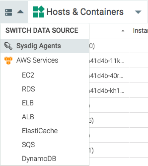
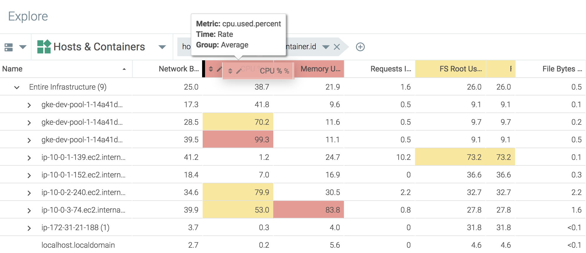
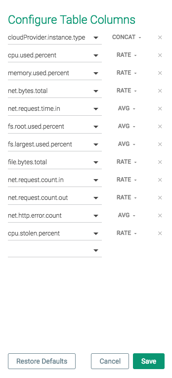
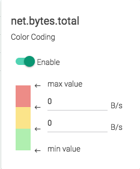
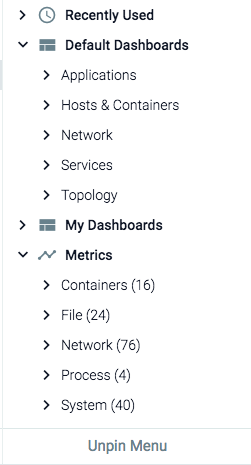
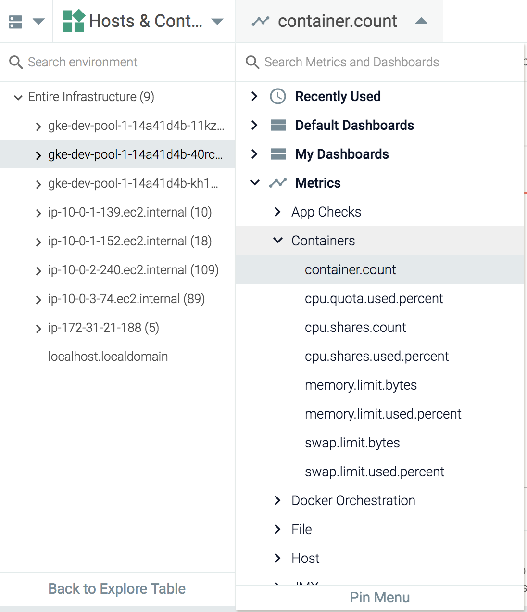
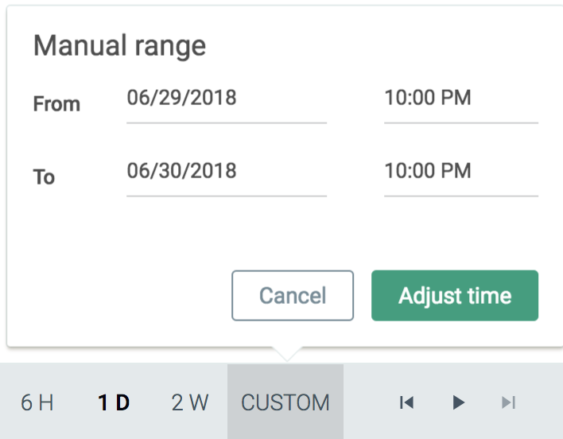

Explore
The Sysdig Monitor web interface centers around the Explore module, where you perform the majority of infrastructure monitoring operations. Explore provides you the ability to view and troubleshoot key metrics and entities of your infrastructure stack. Sysdig Monitor automatically discovers your stack and presents pre-built views in Explore. You can drill down to any layers of your infrastructure hierarchy and view granular level data. Grouping controls how entities are organized in Explore. Grouping is fully customizable by logical layers, such as containers, Kubernetes clusters, or services.
Learn more about using Explore in the following sections:
Explore Interface
The sections below outline the key areas of the interface and detail basic navigation steps.
The C-Frame Structure
The image below provides a complete view of the Sysdig Monitor c-frame style interface:
 |
There are several key areas highlighted in the image above:
Section | Description |
|---|---|
Product Selector | Allows users to switch between Sysdig products. |
Modules | Quick links for each of the main Sysdig Monitor modules: Explore, Dashboards, Alerts, Events, and Captures. |
Management | Quick links for Sysdig Spotlight, help/additional material, and the user profile configuration settings. |
Page | The main section of the interface. |
Time Navigation | Allows users to customize the time window used for displaying data. |
Explore Table
This section helps you navigate the Explore Table in Sysdig Monitor UI.
Data Sources
Switch Data Sources
To switch between available data sources:
On the
Exploretab, click theData Source(two rectangles) drop-down menu: Select the desired data source from the drop-down list.
Groupings
Groupings are hierarchical organizations of tags, allowing users to organize their infrastructure views on the Explore tab in a logical hierarchy. For more information on groupings, refer to Grouping, Scoping, and Segmenting Metrics.
Table Search
The Explore table search bar allows users to search the current grouping for infrastructure objects, based on partial or full name strings.
For example, the search below shows all results that include gke-:
Each result above starts with the search parameters; however, the example below shows that exact name knowledge is not required.
 |
The results above include all instances that contain 1- in the name, regardless of where within the name it is present.
Table Columns
The Explore table columns each display a different metric. These columns can be configured to display the exact information required for the infrastructure.
Note
Changes to the order of existing columns is persistent across groupings, but not across logins, unless columns are added/removed.
To reorder table columns:
On the Explore tab, move the mouse cursor over the relevant column header, and press and hold the left button. A thick left wall border will appear:
 Drag the column until the border marker is in the desired location, then release the left button to confirm the change.
Columns can be added/removed with the table configuration checklist.
Note
Changes made to the checklist are persistent across logins.
To configure the metric table columns:
On the
Exploretab, click theSettings(gear) icon to open the table configuration panel.Open the metric drop-down menus to add or change metrics, and the aggregation drop-down menus to configure the relevant time and group aggregation:
 Click the
Savebutton to save the changes.
Table columns can be configured to use colors to highlight values and improve readability of the Explore table.
To configure color-coding for a column:
From the
Exploremodule, click theEdit(pencil) icon for the desired column:Toggle the
Enableswitch. Configure the color values as necessary. The changes are made automatically.
To restore the default metric table columns:
On the
Exploremodule, click theSettings(gear) icon to open the table configuration panel.Click the
Restore Defaultsbutton.Click the
Savebutton to save the changes.
The Drill-Down Menu
Sysdig Monitor users can drill down into the infrastructure by using the numerous dashboards and metrics available for display in the Explore table. These displays can be found by selecting an infrastructure object, and opening the drill-down menu.
Note
Sysdig Monitor only displays the metrics and dashboards that are relevant to the selected infrastructure object.
To pin the drill-down menu to the Explore tab:
On the
Exploretab, select an infrastructure object:
Open the drill-down menu:
Click the
Pin Menulink to pin the menu to theExploretab.
To unpin the menu, click the Unpin Menu link at the bottom of the menu:
|  |
The drill-down menu displays all the available dashboards relevant to the selected infrastructure object. These dashboards are broken into two sections:
Default Dashboardsare those pre-defined by Sysdig Monitor.My Dashboardsare dashboards either created by, or shared with, the current user.
To view a dashboard:
On the
Exploretab, select an infrastructure object.Open the drill-down menu.
Navigate through either the
Default DashboardsorMy Dashboardsdrop-down menus to find the desired dashboard, and select it.
The dashboard will now be presented in place of the Explore table, until the user navigates away from it.
Note
The scope of the dashboard, when viewed via the drill-down menu, is set to the infrastructure object selected from the Explore table.
Sysdig Monitor users can view specific metrics for an infrastructure object by navigating the drill-down menu:
On the
Exploretab, select an infrastructure object.Open the drill-down menu.
Navigate through the
Metricsdrop-down menu, and select the desired metric:
The metric will now be presented in place of the Explore table, until the user navigates away from it:
 |
Note
The scope of the metric, when viewed via the drill-down menu, is set to the infrastructure object selected from the Explore table.
Time Windows
By default, Sysdig Monitor displays information in Live mode. This means that dashboards, panels, and the Explore table will be automatically updated with new data as time passes, and will display the most recent data available for the configured time window.
Note
By default, time navigation will enter Live mode with a two hour time window.
The time window navigation bar provides users with quick links to common time windows, as well as the ability to configure a custom time period in order to review historical data.
 |
As shown in the image above, the navigation bar provides a number of pieces of information:
The state of the data (Live or Past).
The current time window.
The configured timezone.
In addition, the navigation bar provides:
Quick links for common time windows (one second, one minute, ten minutes, one hour, six hours, one day, and two weeks).
A custom time window configuration option.
A pause/play button to exit Live mode and freeze the data to a time window, and to return to Live mode.
Step back/forward buttons to jump through a frozen time window to review historical data.
Zoom in/out buttons to increase/decrease the time window.
Configure a Custom Time Period
The Time Navigation dropdown panel can be used to configure a specific time range. To configure a manual range:
On the
Exploretab or theDashboardstab, click the Custom link in the time navigation bar.Configure the start and end points, and click the
Adjust Timebutton to save the changes.
Some limitations apply to custom time windows. Refer to the Time Window Limitations section for more information.
Time Window Limitations
Some time window configurations may not be available in certain situations. In these instances, a modification to the time window is automatically applied, and a warning notification will be displayed:
 |
There are two main reasons for a time window being unavailable. Both relate to data granularity and specificity:
The time window specifies the granularity of data that has expired and is no longer available. For example, a time window specifying a one-hour time range from six months ago would not be available, resulting in the time window being modified to a time range of at least one day.
The time window specifies a granularity of data that is too high given the size of the window, as a graph can only handle a certain number of data points. For example, a multi-hour time range would contain too many datapoints at one-minute granularity, and would automatically be modified to 10-minute granularity.
Explore Workflows
While every user has unique needs from Sysdig Monitor, there are three main workflows that you can follow when building out the interface and monitoring your infrastructure.
Workflow One
This workflow assumes that an alert has not been triggered yet.
Start with Explore , identify a problem area, then drill-down into the data. This workflow is the most basic approach, as it begins with a user monitoring the overall infrastructure, rather than with a specific alert notification. The workflow tends to follow the following steps:
Organize the infrastructure with groupings.
Define key signals with alerts and dashboards to detect a problem.
Identify a problem area, and drill down into the data using dashboards, metrics, and by adjusting groupings and scope as necessary.
Workflow Two
Start with an event notification, and begin troubleshooting. This workflow begins with an already configured alert and event being triggered. Unlike workflow one, this workflow assumes that pre-determined data boundaries have already been set:
Explore the event by adjusting time windows, scope, and segmentation.
Identify the exact area of concern within the infrastructure.
Drill down into the data to troubleshoot the issue.
Workflow Three
Customize default dashboard panels to troubleshoot a potential issue. This workflow assumes that an issue has been identified within one of the default dashboards, but alerts have not been set up for the problem area.
Copy the displayed panel to a new dashboard.
Create an alert based on the dashboard panel.
Configure a Sysdig Capture on demand.